Заходи, разувайся
Здесь немного тесно, но мы как раз об этом и поговорим
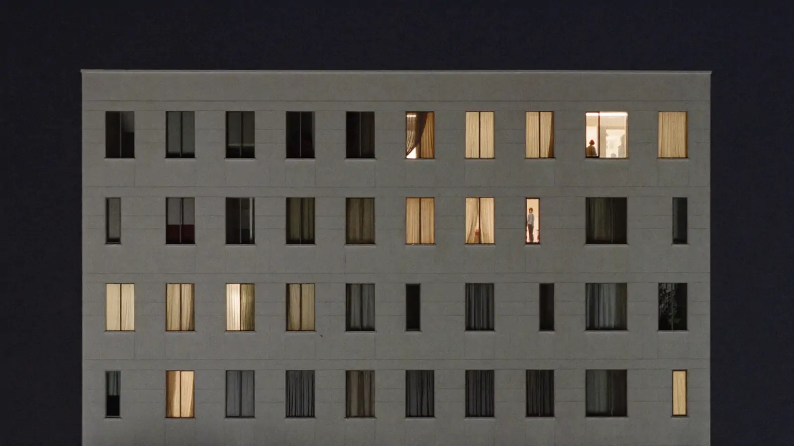
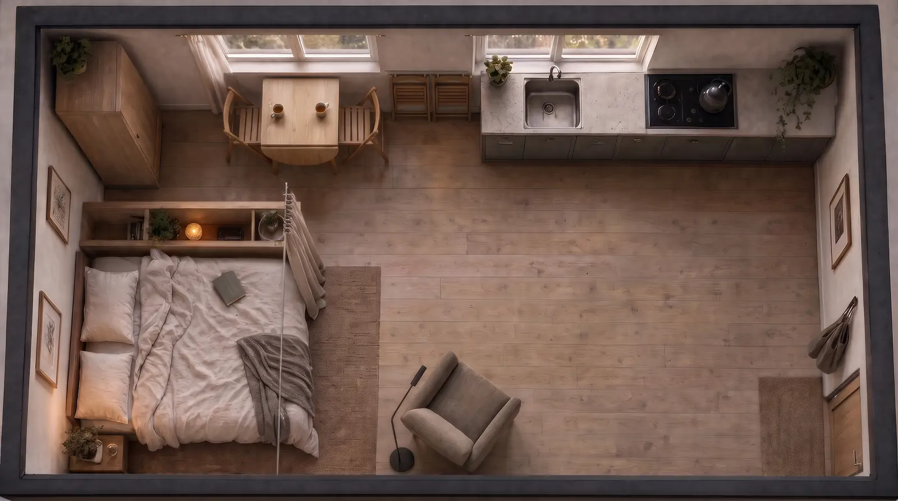
Видишь окна напротив? За каждым кто-то сейчас ужинает, разбирает сумку после работы или просто лежит и смотрит в потолок. У большинства из них квартира примерно как моя: одна комната, в которой надо уместить всю жизнь.
Я долго думала, почему в маленьком пространстве иногда так хорошо, а иногда хочется сбежать. Оказалось, дело не в метрах. Давай я поставлю чайник и всё расскажу.
Как мы все оказались в однушках
- 54% строящихся квартир — однокомнатные
- 36 м² — средняя массовая однушка в 2026 году
- 15% — доля студий в крупнейших городах (в 2023-м было 20%)
Пока закипает вода, немного о том, почему эта тема вообще про многих.
Сейчас больше половины квартир, которые строятся в России, однокомнатные: по данным Дом.РФ, около 54%. При этом сами квартиры за пять лет стали меньше. Массовая двушка потеряла пару метров, трёшка четыре, а однушка бизнес-класса уменьшилась сразу на восемь.
Москва с 2024 года не согласует квартиры меньше 28 м², с 2026-го то же решила Ленинградская область. Минстрой советовал регионам сделать так же, но это осталось рекомендацией. Студии от этого не исчезли, они просто чуть подросли: в московском комфорт-классе в среднем с 24 до 26 метров.
Получается, маленькая квартира никуда не денется. И мне кажется, пора перестать воспринимать её как временный этап. В ней живут годами, и жить там должно быть хорошо.
Паспорт комнаты
- Площадь
- 25,0 м²
- Размеры
- 590 × 424 см
- Окна
- 2
- Дверь
- 1
- Проход
- 90 см
нажми «Чертёж», чтобы увидеть комнату изнутри
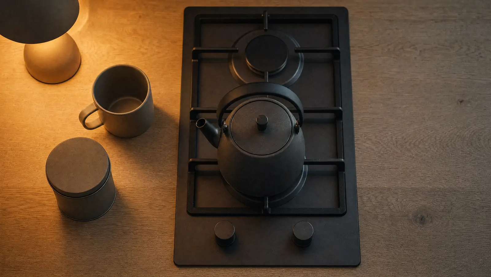
У этого разговора длинная история
Садись, вот сюда, к окну. Пока пьём чай, расскажу, что меня удивило: спорить о маленьком жилье начали задолго до нас.
- 1918. Первые санитарные нормы: десять метров на взрослого, пять на ребёнка.
- 1928–1930. Дом Наркомфина Моисея Гинзбурга. Квартиры там совсем маленькие, зато в доме общая кухня, прачечная, ясли и библиотека. Архитекторы решили, что часть жизни можно вынести из квартиры в общее пространство.
- 1957. Начинают строить хрущёвки. Минимум для однушки 16 метров. Тесно, но у каждой семьи появляется своя дверь.
- Сейчас. Хрущёвки — примерно десятая часть всего жилья в стране. Кто-то из нас в них вырос.
Помнишь кухню у бабушки? Там было места на одного, но почему-то помещались все. Мне кажется, в этом секрет: квартира работает, когда понятно, что в ней происходит и где.
Хрущёвки решили задачу «дать дом каждому». А как в этом доме жить, людям пришлось придумывать самим. Этот вопрос, по-моему, до сих пор открыт.
Когда работа живёт рядом с кроватью
Утром эта комната становится офисом. Ноутбук на столе, кровать за спиной, и где-то к обеду уже непонятно, отдыхаешь ты или работаешь.
Мне попалось исследование, которое это хорошо объясняет. В 2020 году, во время локдауна, учёные из Милана опросили больше восьми тысяч студентов и сравнили, как они живут и как себя чувствуют.
Маленькая квартира действительно немного повышала риск подавленного состояния. Но гораздо сильнее влияло другое: насколько удобно устроено пространство и получается ли дома нормально работать.
Для меня это главная мысль всего лонгрида. Метры не докупишь. А передвинуть стол к окну и отделить его от кровати хотя бы стеллажом можно уже в эти выходные.
Открою тебе шкаф
Да, тут всё по коробочкам. Я научилась этому, когда смотрела, как живут в городах, где места ещё меньше.
В Токио обычная квартира для одного человека занимает 20–25 метров, а бывает и 13. Комнаты до сих пор меряют татами, это около 1,65 м². Японцы спокойно относятся к тому, что часть жизни проходит вне дома: в кафе, в бане, в библиотеке.
В Гонконге одно время продавали «нано-квартиры» меньше 19 метров, некоторые около двенадцати. В итоге власти ввели минимум 26 метров для жилья на государственной земле. А во Франции нельзя сдавать комнату меньше девяти метров.
И моя любимая история. У Ле Корбюзье был летний домик на берегу моря, три шестьдесят шесть на три шестьдесят шесть. Он рассчитал каждый сантиметр под рост человека: две кровати, стол, шкаф, хранение под потолком. Работал он в соседней хижине, обедал в кафе рядом и проводил там каждое лето до конца жизни.
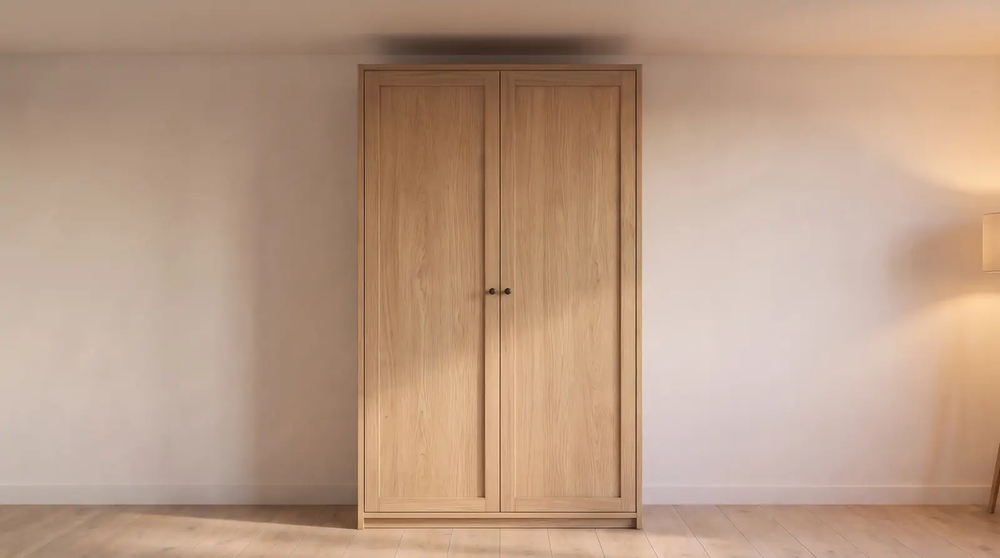
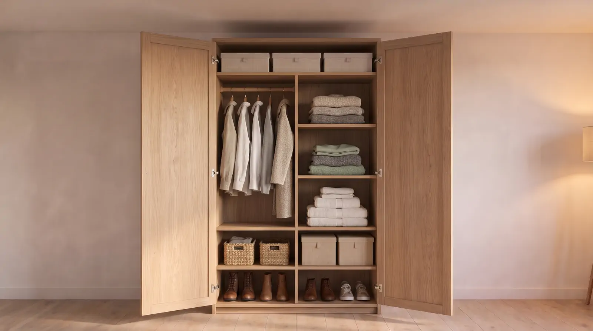
Везде, где в маленьком доме хорошо, у каждой вещи есть своё место. Всё, что можно, уходит наверх и за дверцы. А то, что не помещается, спокойно живёт за пределами квартиры.
Сколько метров нужно для жизни
Я нарисовала в одном масштабе, сколько места считали «достаточным» в разные времена и в разных странах. Посмотри на квадратики, это неожиданно наглядно.
9 м² — минимальная комната в аренду во Франции
12 м² — самая маленькая нано-квартира в Гонконге
13,4 м² — домик Ле Корбюзье
16 м² — однушка-хрущёвка по нормам 1957 года
20–25 м² — квартира для одного в Токио
25 м² — моя студия
28 м² — минимум для новых квартир в Москве
36 м² — средняя однушка в России сегодня
Моя студия где-то посередине. Не самая маленькая, не самая большая. И я всё больше убеждаюсь, что ответа на вопрос «сколько метров нужно» не существует. Есть вопрос, как ими распорядиться.
Давай я покажу, как было месяц назад
Сейчас тут уютно, но так было не сразу. Сразу после переезда я расставила мебель как пришлось, и на фото всё выглядело нормально. А жить было неудобно, и я долго не могла понять почему.
Листай дальше, я расскажу.
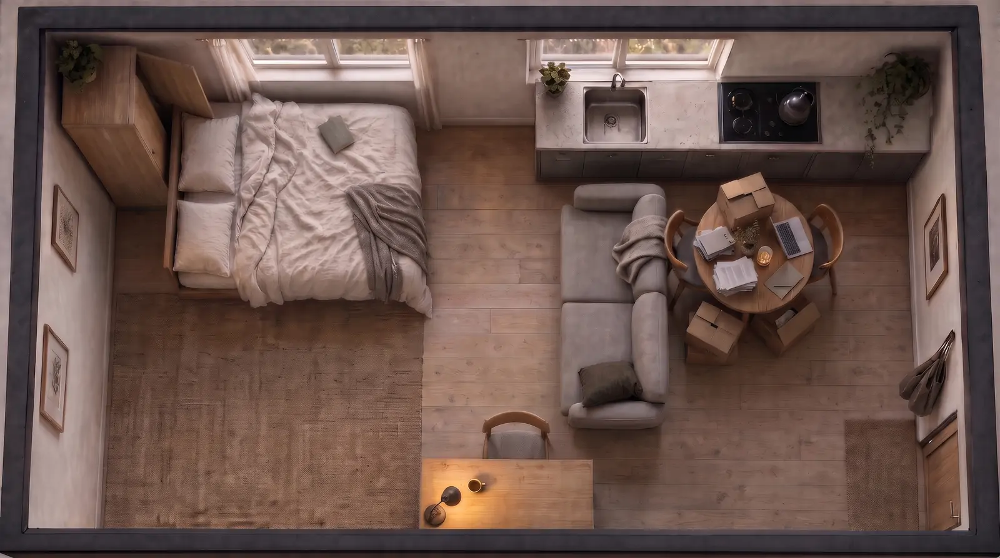
- 01. Проход. Между диваном и стеной оставалось сантиметров тридцать. Каждый вечер с пакетами я пробиралась к кухне боком.
- 02. Шкаф. Кровать стояла слишком близко, и дверца открывалась наполовину. Вещи я доставала на ощупь.
- 03. Свет. Рабочий стол стоял у глухой стены, в трёх с половиной метрах от окна. Лампу приходилось включать даже днём.
- 04. Стол. Обеденный стол был ещё и рабочим, и складом. Чтобы поужинать, сначала надо было всё с него убрать.
Ни одна из этих проблем не видна на красивой картинке. Их чувствуешь только руками и ногами, когда живёшь.
А теперь смотри, что она умеет
Кровать, кухня и шкаф остаются на месте. Меняется только стол, который складывается и раскладывается, пара складных стульев и штора, которая прячет спальное место. И этого хватает, чтобы комната каждый вечер была немного другой.
-
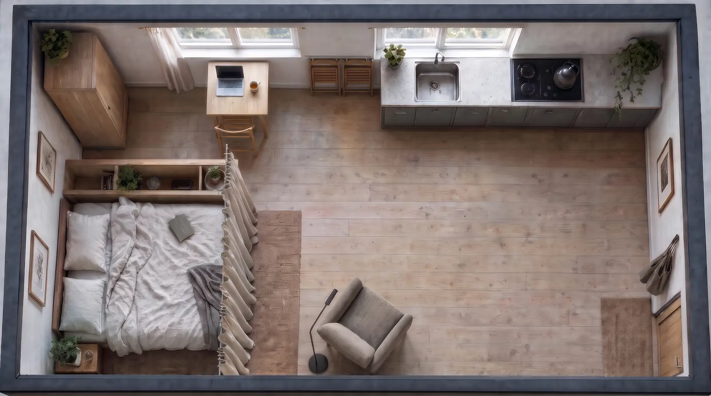
Мебель занимает м². Свободно м². Работаю. Стол переезжает к окну, штора закрыта. Работа больше не живёт рядом со сном.
-
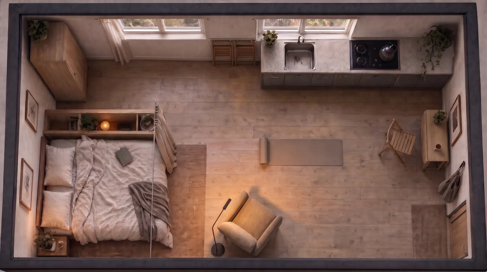
Мебель занимает м². Свободно м². Отдыхаю. Стол складывается в узкую консоль у стены. На полу хватает места для коврика, горит только торшер у кресла.
-
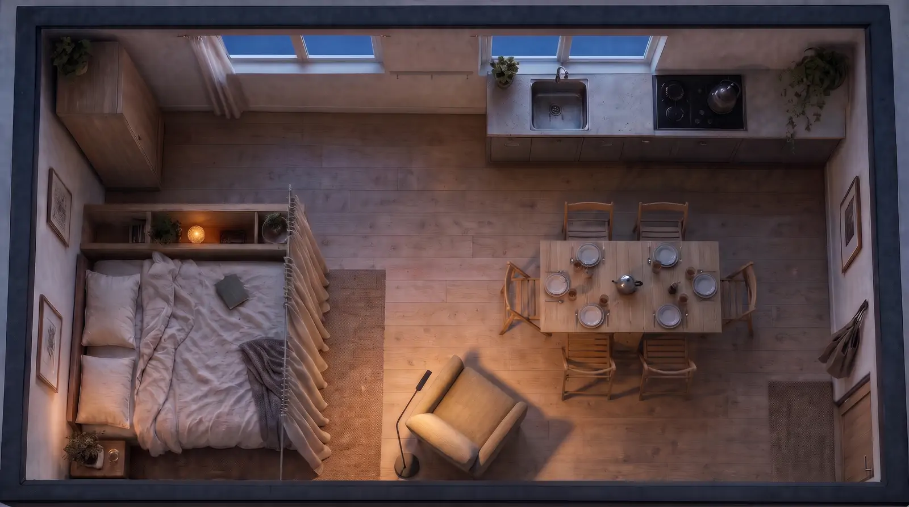
Мебель занимает м². Свободно м². Жду гостей. Стол раскладывается на шестерых, кровать за шторой. На вечер это уже гостиная, и проход к двери свободен.
-
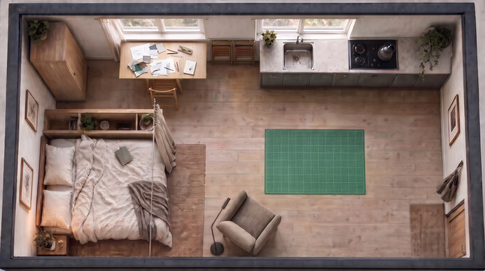
Мебель занимает м². Свободно м². Делаю что-то руками. Большой стол у окна для рисования или шитья, а в центре свободный пол, чтобы что-то разложить.
-
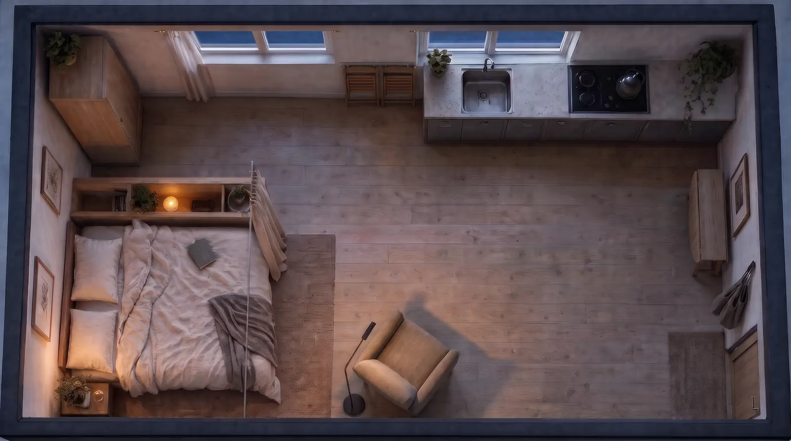
Мебель занимает м². Свободно м². Ничего не делаю. Всё сложено, стулья висят на стене. Посреди комнаты три метра пустого пола. Иногда это и есть самое ценное.
Многие из них снимают
Если присмотреться к окнам напротив, многие из этих квартир съёмные. По данным ДОМ.РФ, за пять лет семей, которые снимают жильё, стало больше: было 5,1 миллиона, стало 5,8. Больше половины тех, кто собирается снимать, — молодые семьи.
Я понимаю, почему так. Ипотека дорогая, и люди живут «временно» по три, пять, семь лет. Хозяйский диван, нельзя сверлить, непонятно, стоит ли вообще что-то покупать.
Но я думаю, что временный дом тоже может быть своим. Просто вещи в нём должны уметь переезжать вместе с тобой, а уют не должен зависеть от ремонта.
- 5,8 млн семей снимают жильё
- +13% за пять лет
- 62% будущих арендаторов — молодые семьи
Расскажи, как ты живёшь
Когда я обустраивала свою квартиру, я начинала с Pinterest и красивых картинок. И это была ошибка. Начинать надо с себя: во сколько ты встаёшь, работаешь ли из дома, часто ли зовёшь друзей, где сушишь бельё.
Попробуй отметить, что из этого про тебя, а я покажу, что из этого следует для комнаты.
концепт интерфейса
- Работаю из дома — Стол хотя бы 100 на 60 у окна или боком к нему, розетки рядом. (≈1,0 м²)
- Сплю — Кровать и проход хотя бы с одной стороны, свет у изголовья. (≈2,8 м²)
- Готовлю — Свободная поверхность между мойкой и плитой, посуда на уровне рук. (≈1,6 м²)
- Зову гостей — Раскладной стол и стулья, которые в будни где-то прячутся. (≈1,4 м²)
- Занимаюсь спортом — Два метра свободного пола, которые не надо каждый раз расчищать. (≈2,0 м²)
- Рисую или мастерю — Большой стол при дневном свете и закрытый ящик для материалов. (≈1,3 м²)
- Много вещей — Закрытые шкафы до потолка: меньше пола, больше места. (≈1,1 м²)
- Нужен тихий угол — Кресло и лампа там, откуда не видно рабочего стола. (≈1,0 м²)
Сценарии ≈5,2 м² + проходы ≈3,5 м²из 25 м² — вся студия
Кажется, твоя жизнь больше этой комнаты. Это нормально. Значит, какие-то зоны будут делить одно место: один стол для работы и гостей, один кусок пола для спорта и отдыха.
Всё помещается с запасом. Значит, свободный пол останется свободным.
Это пример того, как будет думать ReSpace. Размеры даны как ориентир, а не как норма.
Поэтому я и придумала ReSpace
Мне хотелось, чтобы рядом был кто-то, кто спросит не «какой стиль тебе нравится», а «как ты живёшь». И потом спокойно поможет разложить жизнь по комнате, проверит, что шкаф откроется, а диван пройдёт в дверь, и посчитает, во сколько всё это обойдётся.
ReSpace — цифровой помощник, который превращает маленькую квартиру в удобное жильё под твой образ жизни.
- Короткий разговор о твоём быте: когда работаешь, готовишь, отдыхаешь, кого зовёшь в гости.
- Несколько сценариев, как разделить комнату и где хранить вещи.
- Планировка в 3D по реальным размерам твоей квартиры.
- Мебель из разных магазинов с проверкой габаритов и итоговым бюджетом.
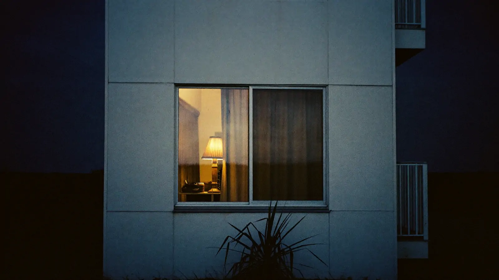
Дом измеряется не только метрами
Чай допит, за окном уже совсем темно. Комната осталась той же, двадцать пять метров. Но теперь, надеюсь, ты смотришь на неё немного иначе: не как на то, чего не хватает, а как на то, что в ней возможно.
Хороший дом не обязательно большой. Это место, которое понимает, что для тебя важно. Иногда это рабочий стол у окна, иногда место для друзей, а иногда просто пустой угол, где ничего не нужно делать.
ReSpace
Анастасия Лахтюхова
ИРКИ НИУ ВШЭ
2026
Куратор: Селезнёва Наталья Александровна